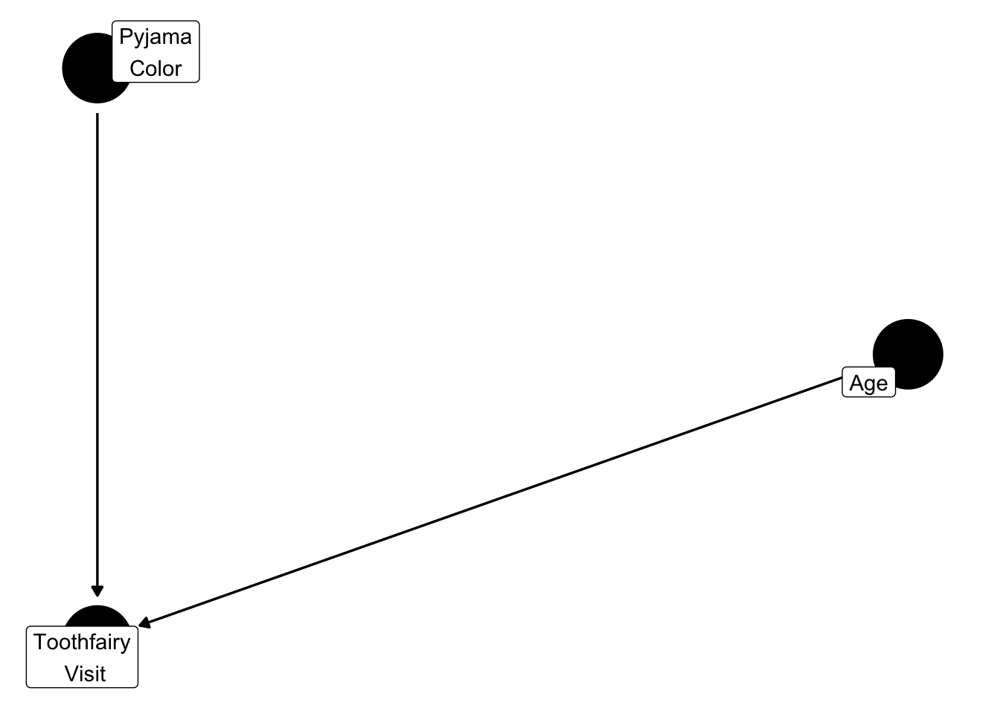

Marginally Important
This post is going to be about marginal compared to conditional effects. First, we need to understand what in the world these terms even mean. To do that, can you guess what we are going to start with? Yup! Probability again.
Conditional vs Unconditional Probability
First things first. Let’s review some basic probability terms. Unconditional probability, denoted as \(P(A)\), is the probability that something will happen. Unconditional probability sounds like a mouthful, so we will use marginal instead. For example, let’s assume in a made-up world that the probability of you getting a visit from the toothfairy is 0.30 on any given night. In mathematical terms:
\[ P(\text{toothfairy visit}) = 0.30 \]
Now, the toothfairy randomly visiting you seems a bit bizarre doesn’t it? She’d just drop by any night for no reason at all? Maybe if you wore pink pyjamas to bed she’d visit. This can be worded as “the probability that the toothfairy will visit, given that you are wearing pink pyjamas to bed”. Using mathematical notation again:
\[ P(\text{toothfairy visit} | \text{wearing pink pyjamas}) \]
Now, how do we calculate that? Well, the below formula (Wassertheil-Smoller and Smoller 2004)
\[ P(A|B) = \frac{P(\text{A and B})}{P(B)} \]
\[ P(\text{toothfairy visit | wearing pink pyjamas}) = \frac{P(\text{toothfairy visit and wearing pink pyjamas})}{P(\text{wearing pink pyjamas})} \]
This same logic goes for when we are conducting analyses. It is important to note here that exchangeability and positivity are two requirements for causal inference. There are four adjustment techniques that we’ll touch on briefly: standardization, IP weighting, stratification and matching. First, we need to review the conditional mean
Conditional Mean
First, we need to briefly define what exactly a parameter is. A parameter of a model is the term that we derive
Parametric Estimators of the Conditional Mean
Models that described the conditional mean in terms of a finite number of parameters are referred to as parametric conditional mean models (Hernan and Robins 2021, 141).
The point of a model is to estimate the value \(E\) of some parameter. The parameter could be the mean or some other measure. Let’s assume that we use the toothfairy visit example again. We want to know the average number of toothfairy visits among people wearing pink pyjamas. In math terms, that would be
\[ E[\text{Toothfairy visits} | \text {Pink pyjamas}] \]
To figure this out, we need a model.
\[ E[\text{Toothfairy visits} | \text {Pink pyjamas}] = \theta_0 + \theta_1*\text{pink pyjamas} \]
The equation above is called a parametric conditional mean model (Hernan and Robins 2021, 141), because it describes the conditional mean function in terms of a finite number of parameters (note: \(\theta_0\) and \(\theta_1\) are referred to as parameters).
Once we’ve fitted some data to the model, we can determine the predicted value for each individual. The notation typically used is
\[ \hat{E}[\text{Toothfairy visits} | \text{pink pyjamas = yes}] = \hat{\theta_0} + \hat{\theta_1}*Yes \]
Parametric estimators, those based on a parametric conditional mean model, allow us to estimate quantities that cannot be estimated otherwise However, the inferences are only correct if the restrictions are correct (i.e., the model is correctly specified) (Hernan and Robins 2021, 152).
Imagine that in our database, we have no people that wear pink pyjamas but we have people that wear blue and green pyjamas. We would have to use the data that we have to make inferences about those people wearing pink pyjamas. In the above equation, we havd to restrict the shape of the relation, also known as the functional form (Hernan and Robins 2021, 141).
Nonparametric Estimators of the Conditional Mean
Nonparametric estimators of the conditional mean are those that produce estimates from the data without any prior restrictions on the conditional mean function (Hernan and Robins 2021, 143). To use our example above, the only way to have a nonparametric estimator of the conditional mean would be to have that value measured. Based on our example above, if there were no participants wearing pink pyjamas then there would be no nonparametric estimator for the conditional mean of the toothfairy visiting.
Conditional to Marginal
Now, we can calculate the unconditional expectation using the law of total expectation, however when we are talking about conditional versus marginal in clinical epidemiology, there is an additional layer we need to discuss: effect modification.
\[ E[Y] = \sum_x E[Y|X = x]Pr[X=x] \]
Effect Modification
An effect modifier is when the average causal effect varies across levels of that variable. For example, in figure Figure 1
Effect modification is defined as \
The marginal effect measure, would be that that is unconditional (i.e., does not depend on covariates). There are certain methods that can provide a marginal effect measure, while there are others that cannot. Standardization and IP weighting can be used to compute either marginal or conditional effects. Stratification/restriction and matching can only be used to compute conditional effects in certain subsets of the population (Hernan and Robins 2021, 51). Let’s break down each of these methods one by one.
References
Hernan, M. A., and J. M. Robins. 2021. “What If - Causal Inference.” Journal Article.
Wassertheil-Smoller, Sylvia, and Jordan Smoller. 2004. Biostatistics and Epidemiology: A Primer for Health and Biomedical Professionals. Springer.